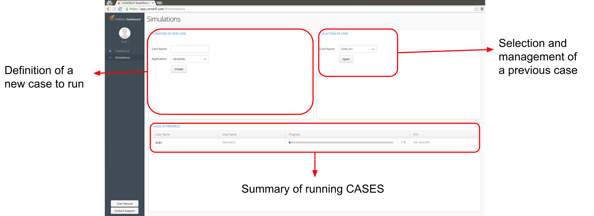
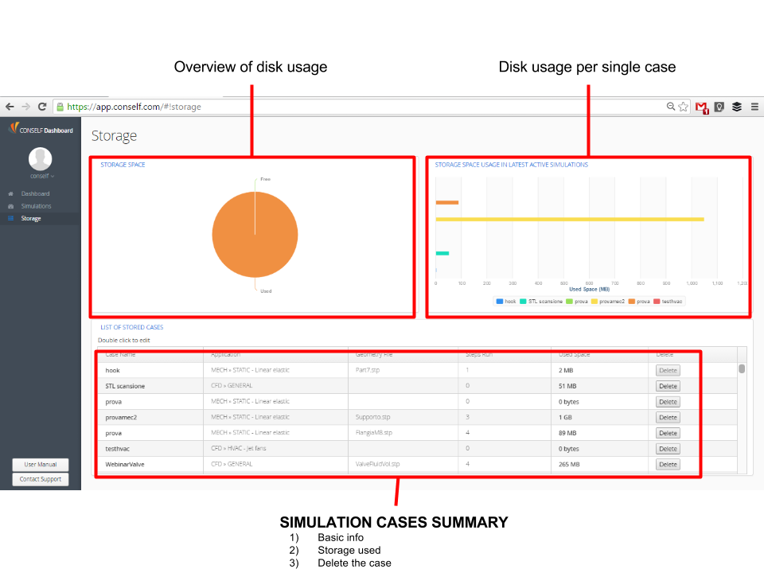
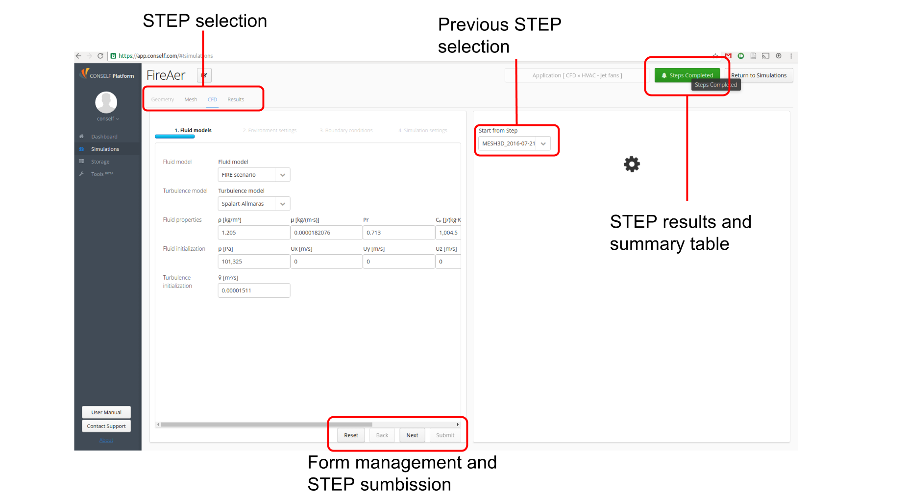

Using CONSELF means entering a new mindset, a new philosophy of simulating. Therefore, in order to be able to read and understand the following tutorials, bear in mind the following key definitions:
Simulation: a mathematical procedure that allows to reproduce in a virtual environment - software - a physical behavior. Compared to laboratory tests, it is a quicker and cheaper process. Ultimately, simulations help engineers validate the hypothesis behind every design phase.
Case: any single test performed by using a simulation system.
Step: any single phase the user has to accomplish in order to run a complete case simulation.
Although each CASE simulation depends on the users’ needs, CONSELF defines an identical path for every simulation. This path is divided into the following STEPS:
Obviously, in order to perform a certain STEP all previous ones must be completed. Furthermore, it is possible to run multiple STEP from the same precursor (i.e. run multiple CFD by using the same mesh). For this reason, when starting a new STEP it is always required to link it to a precursor, as shown in the picture.
In the present manual, each of these steps are accurately described and displayed, with examples taken form CONSELF-run tutorials.
After having logged in, the CONSELF dashboard appears on screen. On the menu on the left side, the last entry is the Simulations tab. Click on it to be redirected to the simulations front page, shown in the following figure. There are three main sections: two in the upper part and one in the bottom part of the figure.
| Field name | Application name | Main features |
|---|---|---|
| CFD | GENERAL | Compressible and incompressible with steady and transient features. |
| CFD | TURBO - SRF PUMPS | Single reference frame (rotating) incompressible flow. Steady simulation for pumps. |
| CFD | OIL&GAS - FLOW WITH PARTICLES | Incompressible flow with with solid particles transported. |
| CFD | OIL&GAS - MULTIPHASE FLOW | Incompressible flow of two inmiscible species. |
| CFD | HVAC - JET FANS | CO and FIRE scenarios for indoor car park simulations. |
| MECH | STATIC | Mechanical simulation using an isotropic linear elastic material. |
Type the first part of the application name to filter the available choices.

Selection of case: the user can open a previously created case from the drop-down list.
Cases in progress: all running simulations are shown in a table with the following details

CONSELF provides also cloud storage to save your remote cases. The storage availability may be different according to the plan you activate in our store. It is possible to check the space available on the disk and manage old cases.
CONSELF guides you through the simulation literally step by step; in fact, in order to complete a simulation, the user has to go through several steps, each of which fulfills a precise task. Given the high flexibility of this method, users, less experienced as well, may take advantage of this philosophy of work: they have the ability to control the process, start over or modify what had previously been done. When a CASE is opened, a STEP interface is accessed, as shown in the picture below.

The application is generally divided into two sides:
Left side: current step options to be defined by the user
Right side: view of the simulation results up to the current step
It is fundamental to note the button (GREEN or RED) on the top right of the page named Steps completed. By clicking it is possible to access a summary of performed steps with error messages, settings used and other information useful to keep improving your simulation. We recommend to check the error to have a quick overview of the most common error and their solution.